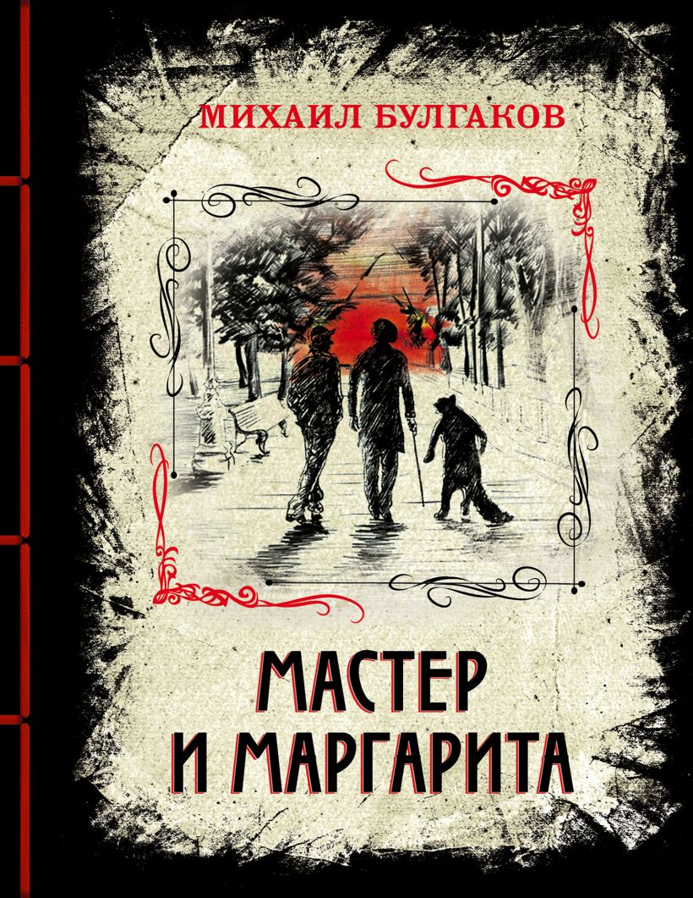

Нажми на картинку, чтобы увеличить
«Мастер и Маргарита» Михаила Булгакова — культовый роман о любвитворчестве и борьбе добра со злом.
В сатирической и мистической форме рассказывается о пришествии Сатаны (Воланда) в Москву 1930-х годовего влиянии на судьбы Мастера и Маргаритыа также о параллельно повествуемой истории Понтия Пилата и Иешуа Га-Ноцри.